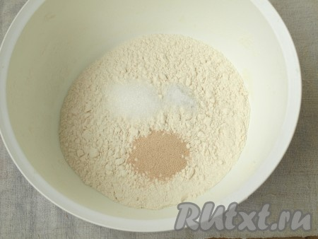

Никакой магазинный хлеб никогда не заменит домашний, испечённый собственными руками. В домашний хлеб мы вкладываем свою энергетику и всю любовь к своим домочадцам. Я очень люблю печь хлеб и, даже обзаведясь хлебопечкой, всё равно готовлю хлеб, делая замес руками, и выпекаю его в духовке. Будучи занятым человеком я стараюсь подыскивать рецепты хлеба, который готовится за относительно небольшой отрезок времени. В этот раз предлагаю вам рецепт быстрого домашнего хлеба, который я попробовала совсем недавно, но уже успела испечь трижды. Хлеб очень мягкий и воздушный - смело вам его рекомендую!
Ингредиенты
| Для приготовления быстрого домашнего хлеба нам понадобится: | |
|---|---|
| Вода тёплая | 210 мл |
| Дрожжи сухие | 1 ч. л |
| Мука пшеничная | 320 г. |
| Масло подсолнечное | 30 мл |
| Сахар | 1 ч. л |
| Соль | 0.5 ч. л |
Этапы приготовления
Смешать сухие ингредиенты: просеять муку, добавить соль, сахар и дрожжи.
